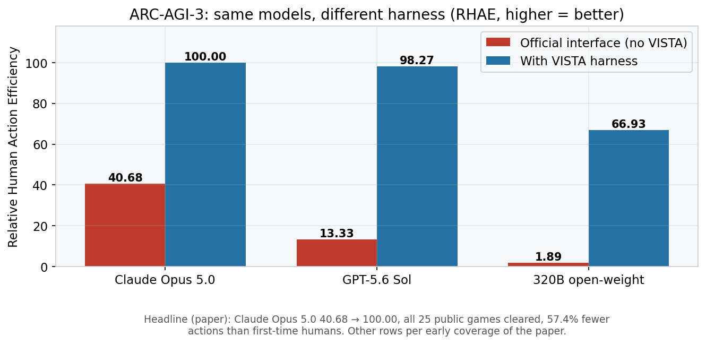
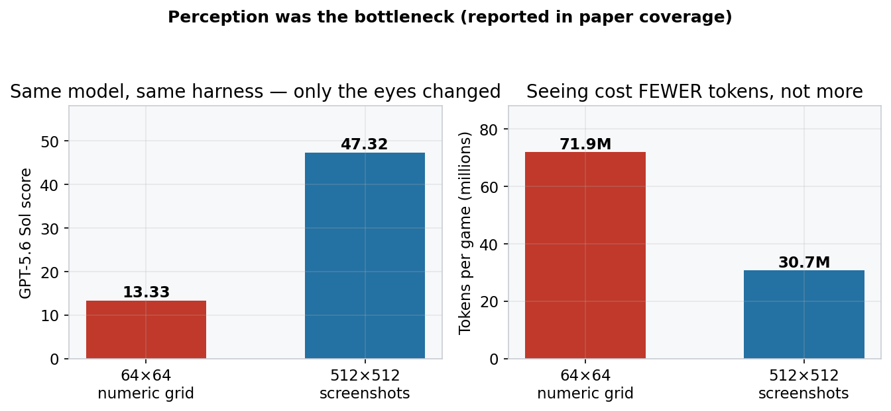
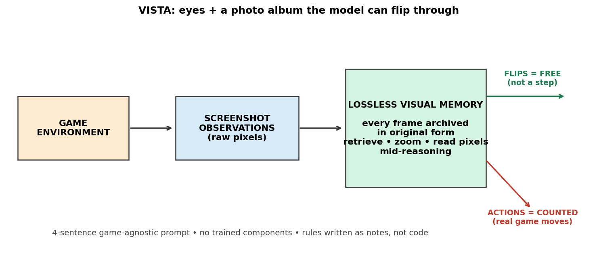
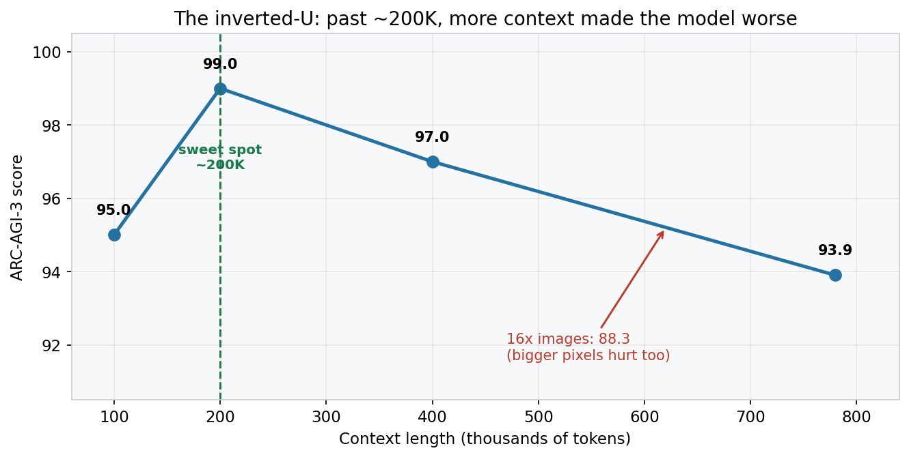

One-line: On October 1, MIT's Kaiming He team published VISTA — a visual harness with a lossless photo-album memory that lifted Claude Opus 5.0's Relative Human Action Efficiency on ARC-AGI-3 from 40.68 to a perfect 100.00, clearing all 25 public games with 57.4% fewer actions than first-time human players. No new model. No training. Four sentences of prompt.
ARC-AGI-3 is the cruel exam of the AI world. It hands an agent an unfamiliar video game — grid-world puzzles, checkers variants, web games — and demands it learn the rules from scratch, by playing. No tutorial. The standard way to play it: pipe the game state to the model as a 64×64 numeric text grid, ask what to do next, and count the moves.
On October 1, Qiushi Han, Keya Hu, Linlu Qiu, Cathy Wu, and Kaiming He at MIT CSAIL posted a paper that says, in effect: the models were never bad at this test. They were blind. arXiv:2610.02200
The headline number, straight from the abstract: VISTA took Claude Opus 5.0's Relative Human Action Efficiency (RHAE) from 40.68 to 100.00 — the model completed all 25 public games using 57.4% fewer actions than first-time human participants. Same model. Different eyes.

Official interface vs VISTA harness (RHAE, higher = better). The headline row is from the paper; the other rows are as reported in early coverage of the paper.
ELI5: the blindfolded student
Imagine two students taking a video-game exam.
Student A gets a spreadsheet of numbers describing the screen — "row 3, column 7 = 5" — updated every move. Student B gets actual screenshots, plus a photo album: every screenshot ever shown, kept perfectly, that they can flip through for free, zoom into, and read pixel values from mid-thought.
Student A is how every frontier model has been playing ARC-AGI-3. Student B is VISTA.
Here's the twist nobody predicted: Student B is cheaper. When coverage of the paper swapped the 64×64 numeric grid for plain 512×512 screenshots on GPT-5.6 Sol, the score went from 13.33 to 47.32 — and the image version used 30.7 million tokens per game versus 71.9 million for text. A screenshot says in one picture what takes the grid thousands of digits to spell out. The model wasn't missing intelligence. It was missing eyes.

Same model, same harness — only the observation format changed. Perception was the bottleneck, and seeing cost fewer tokens, not more. (Reported in early coverage of the paper.)
How it works: eyes, a photo album, and four sentences
1. The eyes: screenshots instead of spreadsheets
The official ARC-AGI-3 interface describes the world as a 64×64 numeric grid. VISTA throws that away and feeds the model raw visual observations — screenshots at 512×512. Spatial relationships that the grid buried in coordinates become directly visible: adjacency, symmetry, motion. The model perceives the environment the way a human player does.
2. The photo album: lossless visual memory
This is the core idea. VISTA maintains a lossless visual memory: every frame the environment returns is archived in its original form — not summarized, not embedded into a vector, not compressed into a rolling context window. The model can actively retrieve any past observation mid-reasoning, zoom into corners, or read exact pixel values.
The killer detail: flipping through the album doesn't count as a step. Only real actions in the game do. The model gets to think with its eyes for free, and pay only for moves. Contrast that with the usual agent pattern — stuffing observations into a growing context until the window overflows and the past degrades into a vague summary. VISTA's memory never degrades. It's a photo album, not a rumor of one.

3. Four sentences, zero training
VISTA has no trained components. The prompt for each game is the same template — four sentences, not a single word teaching it how to play that specific game. The model figures out each game's rules and writes them down as notes in natural language. For the checkers game LF52, the dominant programmatic approach (Schema) wrote a full ~4,000 lines of Python to capture the rules; the VISTA model captured the same rule in three sentences of notes. 4,000 lines of code versus three sentences. That ratio is the whole argument for harness-first progress.
SOTA: the numbers behind the perfect score
The paper-verified core: 40.68 → 100.00 RHAE, 25/25 public games cleared, 57.4% fewer actions than first-time humans. Claude used a reported 7,302 total steps — about 0.43× the human average, and on the game m0r0, humans needed 1,107 steps while Claude needed 219.
The lift generalizes beyond one strong model. Early coverage reports that a 320B open-weight model scoring a mere 1.89 with the official interface was lifted to 66.93 by VISTA — a ~35× improvement from a harness alone, no weight changes. GPT-5.6 Sol reportedly scored 98.27 under the same harness.
The same design extends with minimal adaptation. Per the paper, VISTA substantially outperforms baselines across three additional benchmarks of visual games and puzzles. Coverage adds two striking data points: plugged into 3D scenes with perspective, it held at 84.12; dropped into 34 web games (Mario, 2048, Minecraft-style tasks), GPT-5.6 Sol under VISTA hit a 63.3% task success rate — directly beating human novices at 55.3%. And on a BabyVision connecting-the-dots puzzle, the model only got the answer right when VISTA let it zoom in — the static-image answer was wrong.
There is also a delicious cross-system footnote. A separate August effort, Nvidia's AVO harness (same idea family — persistent memory, supervision), reportedly completed the same 183 public levels in 6,624 environment actions versus VISTA's 7,542 — about 12% fewer — though the comparison isn't a controlled ablation. The harness wars are now a leaderboard of their own.
The inverted-U: more is not better
The paper's most counterintuitive finding, per coverage: extending context from 200K to 780K dropped the score from 99 to 93.9, and enlarging images 16× cut it to 88.3. Past the sweet spot, more pixels and more context hurt — the model drowns in its own memory. That finding quietly kills a year of industry reflex ("just make the window bigger") and reframes the problem as memory design, not memory size.

Caveat worth stating plainly: the paper's authors note their models postdate the public games, so the real generalization test is the private set. Scorecard entries cited above are on the ARC Prize public platform.
Takeaways
- The harness is a first-class research artifact. A four-sentence prompt and a screenshot pipeline moved the same model from 40.68 to a perfect 100. If you're benchmarking a model without controlling the harness, you're measuring the wrapper, not the weights.
- Perception was the bottleneck, not reasoning. The industry spent two years scaling reasoning; the MIT team showed the models were already smart enough — they just couldn't see. Check your agent's observation format before you blame its brain.
- Memory should be an archive, not a summary. VISTA's lossless frame store never degrades; rolling context windows do. The "flip back for free" rule is the design move everyone building long-horizon agents should steal.
- Bigger context is not the answer. The inverted-U says memory design beats memory size. Stop feeding the model more; start letting it look better.
- Notes beat code for rule discovery. 4,000 lines of Python versus three sentences. When the environment can't give you a simulator, a model that writes its own field notes wins.
Numbers with "reported in early coverage" come from secondary reporting on the paper, not the paper text itself — treat the arXiv-verified figures (40.68→100.00, 25 games, 57.4%) as the solid core.